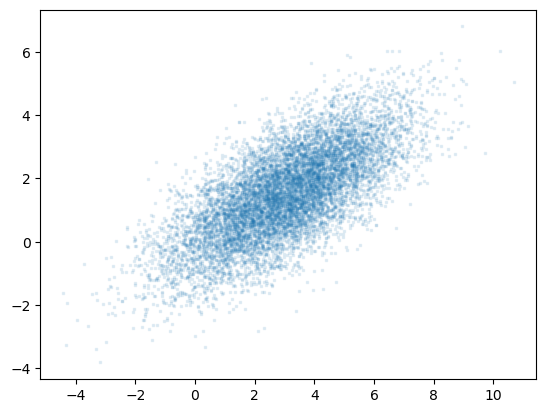

import numpy as np
import polars as pl
from polars import selectors as cs
import matplotlib.pyplot as plt
plt.rcParams['font.family'] = "MS Gothic"Homeworks
数式
標本標準偏差
s = \sqrt{\frac{1}{n - 1}\sum_{i = 1}^n {(x_i - \overline{x})^2}}
相関係数
xとyの相関係数、\bar{x}はxの平均値、\bar{y}はyの平均値
r = \frac{\sum_{i=1}^{n}(x_i - \bar{x})(y_i - \bar{y})}{\sqrt{\sum_{i=1}^{n}(x_i - \bar{x})^2} \cdot \sqrt{\sum_{i=1}^{n}(y_i - \bar{y})^2}} = \frac{\text{共分散}}{\sigma_{x}\sigma_{y}}
ポートフォリオリターン
資産Aと資産Cのポートフォリオのリターン、ウェートは:
w_{A} + w_{B} = 1
期待リターン
\mu_P = w_{A} \cdot \mu_A + w_{B} \cdot \mu_B
標準偏差
\sigma_{p} = \sqrt{w_{A}^{2}\sigma_{A}^{2} + w_{C}^{2}\sigma_{C}^{2} + 2w_{A}w_{C}\rho_{A,C}\sigma_{A}\sigma_{C}}
\rho_{A,C}はAとCの相関係数
Cは安全資産の場合は
\sigma_{p} = w_{A} \sigma_A
file_path = '学籍番号_D.xlsm'
df = pl.read_excel(file_path, sheet_name='D')
df.head(5)
shape: (5, 8)
| date | 1928.T | 3046.T | 3402.T | 4523.T | 6869.T | TOPIX | Bond_Rate |
|---|---|---|---|---|---|---|---|
| date | f64 | f64 | f64 | f64 | f64 | f64 | f64 |
| 2015-03-31 | 1207.30481 | 3872.286865 | 829.327209 | 6766.730957 | 2056.873779 | 1543.11 | 0.398 |
| 2015-04-30 | 1290.996582 | 4295.310059 | 857.740051 | 6367.942871 | 2047.623169 | 1592.79 | 0.336 |
| 2015-05-29 | 1435.55481 | 4476.60498 | 852.798767 | 6184.008301 | 2223.397217 | 1673.65 | 0.406 |
| 2015-06-30 | 1344.600586 | 4908.925781 | 852.798767 | 6513.822266 | 2251.151611 | 1630.4 | 0.451 |
| 2015-07-31 | 1293.823975 | 5615.512695 | 813.185364 | 6417.89209 | 2476.26709 | 1659.52 | 0.414 |
Work 4
問題1
割り振られたxlsファイルに掲載されている銘柄の株価，および，TOPIXの推移についてのグラフを作成しなさい。なお，銘柄間の比較できるように，いずれの株価およびTOPIXも2015年3月末日の価格(指数)を1とするように調整すること。
- グラフは1つにまとめること。
- 期間は2015年3月末から2025年3月末までの121か月であること。
解答
# 期間フィルター
start_date = pl.datetime(2015, 3, 31)
end_date = pl.datetime(2025, 3, 31)
df = df.filter((pl.col("date") >= start_date) & (pl.col("date") <= end_date))
cols = pl.exclude('date', 'Bond_Rate')
df_norm = df.select(
'date',
cols / cols.get(0),
'Bond_Rate'
)
col_names = df_norm.select(cols).columns
# グラフ描画
plt.figure(figsize=(7, 4))
dates = df_norm.get_column("date").to_list()
for ticker in col_names:
y = df.get_column(ticker).to_list()
plt.plot(dates, y, label=ticker)
plt.title("株価・TOPIXの推移（2015年3月末を1として正規化）")
plt.xlabel("年月")
plt.ylabel("正規化価格（2015/3/31 = 1）")
plt.legend()
plt.grid(True)
plt.tight_layout()
plt.show()
問題2
- 各銘柄の株価の月次リターン(%)，TOPIXの月次リターン(%)，および，Bond_Rate (%)について，7つのグラフを作成しなさい。
- グラフの作成する際，それぞれについて作成すること。
- グラフ間で比較することができるように，各グラフの縦軸を統一すること。
- 期間は2015年4月末から2025年3月末までの120か月であること。
- 月次リターン(％)に統一すること。
- 特に，Bond_Rateは年次リターン(％)であり，月次リターンではないこと、そして、小数表示の数値が%表示になっていることに注意しなさい。
Bond_Rateを月次リターンに変換すべきかどうか不明です。
解答
cols = cs.ends_with(".T") | cs.by_name('TOPIX')
bond = pl.col('Bond_Rate')
df_return = df.select(
'date',
((cols / cols.shift(1) - 1) * 100),
bond,
# ((((bond / 100) + 1).pow(1 / 12.0) - 1.0) * 100)
).drop_nulls()
fig, axes = plt.subplots(nrows=4, ncols=2, figsize=(10, 10), sharey=True, sharex=False)
axes = axes.flatten()
for i, name in enumerate(df_return.columns[1:]):
ax = axes[i]
ax.plot(df_return['date'], df_return[name], label=name)
ax.set_title(f"{name} 月次リターン(%)")
ax.set_ylabel("リターン(%)")
ax.grid(True)
ax.legend()
ax.autoscale(tight=True)
# 空のプロット（8個枠中、7個使用）
axes[-1].axis("off")
plt.tight_layout()
plt.suptitle("各銘柄・TOPIX・Bond_Rate の月次リターン(%)", fontsize=16, y=1.02)
plt.show()問題3
- 各銘柄の株価の月次リターン(%)，TOPIXの月次リターン(%)，および，Bond_Rate (%)の標本平均，標本標準偏差，最大値，最小値，標本数を計算しなさい。
- 期間は2015年4月末から2025年末3月までの120か月であること。
- 数値は％表示とし，月次リターン(％)に統一すること。％については小数第3位までで答えなさい。
解答
標本標準偏差は以下の式で求めます。
s = \sqrt{\frac{1}{n - 1}\sum_{i = 1}^n {(x_i - \overline{x})^2}}
cols = pl.exclude('date')
df_summary = df_return.select(
cols.mean().name.suffix("|mean"),
cols.std().name.suffix("|std"),
cols.max().name.suffix("|max"),
cols.min().name.suffix("|min"),
cols.count().name.suffix("|count")
)
(
df_summary
.transpose(include_header=True, header_name='name', column_names=['value'])
.with_columns(
pl.col('name').str.split("|").list.get(0).alias('name'),
pl.col('name').str.split("|").list.get(1).alias('stats'),
)
.pivot(on='name', index='stats')
)
shape: (5, 8)
| stats | 1928.T | 3046.T | 3402.T | 4523.T | 6869.T | TOPIX | Bond_Rate |
|---|---|---|---|---|---|---|---|
| str | f64 | f64 | f64 | f64 | f64 | f64 | f64 |
| "mean" | 1.004073 | 1.001955 | 0.395493 | 0.111752 | 0.673349 | 0.542258 | 0.242833 |
| "std" | 5.570503 | 10.113173 | 6.713032 | 10.59053 | 8.887441 | 4.187836 | 0.371253 |
| "max" | 18.878324 | 30.09404 | 20.34438 | 48.477845 | 18.529588 | 11.118006 | 1.497 |
| "min" | -15.706183 | -25.996534 | -23.667997 | -31.562576 | -30.353685 | -10.396714 | -0.275 |
| "count" | 120.0 | 120.0 | 120.0 | 120.0 | 120.0 | 120.0 | 120.0 |
問題4
- 各銘柄の株価の月次リターン(%)とTOPIXの月次リターン(%)との標本相関係数を計算しなさい。
- 期間は2015年4末月から2024末年5月までの120か月であること。
- 数値は％ではなく割合表示とし，小数第3位までで答えなさい。
解答
df_return.select(
pl.corr(cs.ends_with('.T'), 'TOPIX', method='pearson')
)
shape: (1, 5)
| 1928.T | 3046.T | 3402.T | 4523.T | 6869.T |
|---|---|---|---|---|
| f64 | f64 | f64 | f64 | f64 |
| 0.628319 | 0.064605 | 0.518182 | 0.29474 | 0.432376 |
- (4)と同様に，各銘柄の株価の月次リターン(%)と10年国債利回り(%)との標本相関係数を計算しなさい。
df_return.select(
pl.corr(cs.ends_with('.T'), 'Bond_Rate', method='pearson')
)
shape: (1, 5)
| 1928.T | 3046.T | 3402.T | 4523.T | 6869.T |
|---|---|---|---|---|
| f64 | f64 | f64 | f64 | f64 |
| -0.010164 | 0.131947 | 0.129688 | -0.111995 | -0.039146 |
Work 6
問題1
資金10億円を持つ投資家が，t－1期に資産Aに6億円相当分，資産Bに4億円相当分を投資する。t－1期，t期における株価は表1のとおりである。
- この資産A，資産Bからなるポートフォリオの実現リターン(%)を求めなさい。加えて，資産A，資産Bのリターンの期待値，標準偏差，相関係数は，表2のとおりである。
- (1)のポートフォリオを用いて，このポートフォリオのリターンの期待値(%)，標準偏差(%)を求めなさい。
解答
- 実現リターン（％）
まず、資産A・Bのt-1期からt期にかけての価格変化を基に、それぞれのリターンを求めます。
資産A
株価：200 → 240
リターン：
\frac{240 - 200}{200} = \frac{40}{200} = 0.2 = 20\%
資産B
株価：300 → 320
リターン：
\frac{320 - 300}{300} = \frac{20}{300} = 0.0667 = 6.67\%
ポートフォリオの実現リターン
ポートフォリオの投資比率：
A：6億円 / 10億円 = 0.6
B：4億円 / 10億円 = 0.4
ポートフォリオの実現リターン R_{p} は重み付き平均：
R_{p} = 0.6 \times 20\% + 0.4 \times 6.67\% = 12\% + 2.667\% = 14.667\%
ポートフォリオの実現リターン：14.67%
- ポートフォリオの期待リターン・標準偏差
Aの期待リターン：8.00%、標準偏差：4.00%
Bの期待リターン：6.00%、標準偏差：2.00%
相関係数：\rho_{AB} = 0.5
投資比率：
A：w_{A} = 0.6
B：w_{B} = 0.4
ポートフォリオの期待リターン E\lbrack R_{p}\rbrack
E\lbrack R_{p}\rbrack = w_{A} \cdot E\lbrack R_{A}\rbrack + w_{B} \cdot E\lbrack R_{B}\rbrack = 0.6 \cdot 8\% + 0.4 \cdot 6\% = 4.8\% + 2.4\% = 7.2\%
ポートフォリオの標準偏差 \sigma_{p}
公式：
\sigma_{p} = \sqrt{w_{A}^{2} \cdot \sigma_{A}^{2} + w_{B}^{2} \cdot \sigma_{B}^{2} + 2w_{A}w_{B} \cdot \rho_{AB} \cdot \sigma_{A} \cdot \sigma_{B}}
数値を代入：
\sigma_{p} = \sqrt{(0.6)^{2} \cdot (4)^{2} + (0.4)^{2} \cdot (2)^{2} + 2 \cdot 0.6 \cdot 0.4 \cdot 0.5 \cdot 4 \cdot 2}
= \sqrt{0.36 \cdot 16 + 0.16 \cdot 4 + 0.48 \cdot 0.5 \cdot 8} = \sqrt{5.76 + 0.64 + 1.92} = \sqrt{8.32} \approx 2.885\%
ポートフォリオの期待リターン：7.20%
ポートフォリオの標準偏差：2.89%
問題2
資産Aと資産Cからなるポートフォリオを考える。このポートフォリオに対する資産Aのウェイトは0.5である。また，資産A，資産Cのリターンの期待値，標準偏差は表3のとおりである。
このポートフォリオのリターンの標準偏差を1.66%とするとき，相関係数を求めなさい。
解答
ポートフォリオのリターンの標準偏差の式（2資産の場合）：
\sigma_{p} = \sqrt{w_{A}^{2}\sigma_{A}^{2} + w_{C}^{2}\sigma_{C}^{2} + 2w_{A}w_{C}\rho_{A,C}\sigma_{A}\sigma_{C}}
ここで：
\sigma_{p} = 0.0166：ポートフォリオの標準偏差
w_{A} = 0.5：資産Aのウェイト
w_{C} = 1 - w_{A} = 0.5：資産Cのウェイト
\sigma_{A} = 0.04：資産Aの標準偏差
\sigma_{C} = 0.01：資産Cの標準偏差
\rho_{A,C}：相関係数
式に代入：
{0.0166}^{2} = (0.5)^{2} \cdot {0.04}^{2} + (0.5)^{2} \cdot {0.01}^{2} + 2 \cdot 0.5 \cdot 0.5 \cdot \rho_{A,C} \cdot 0.04 \cdot 0.01
0.00027556 = 0.0004 + 0.000025 + 0.0002 \cdot \rho_{A,C}
0.00027556 - 0.000425 = 0.0002 \cdot \rho_{A,C}
- 0.00014944 = 0.0002 \cdot \rho_{A,C}
\rho_{A,C} = \frac{- 0.00014944}{0.0002} = - 0.7472
問題3
資産Aと資産Dからなるポートフォリオを考える。資産A，資産Dのリターンの期待値，標準偏差，相関係数は，表4のとおりである。
このポートフォリオのリターンの期待値を最大にするポートフォリオを構成する資産Aのポートフォリオウェイトを求めなさい。なお，各資産のポートフォリオウェイトは0以上とする。
このポートフォリオのリターンの標準偏差を最小にするポートフォリオを構成する資産Aのポートフォリオウェイトを求めなさい。なお，各資産のポートフォリオウェイトは0以上とする。
解答
与えられた情報
| A | D | |
|---|---|---|
| 期待リターン | 8.00% | 10.00% |
| 標準偏差 | 4.00% | 7.00% |
| 相関係数 (ρ) | -0.7 |
資産Aのウェイトを w、資産Dのウェイトを 1 - w とします。
(1) リターンの期待値を最大にするAのウェイト
ポートフォリオの期待リターンは次の式で求められます：
E(R_{p}) = w \cdot E(R_{A}) + (1 - w) \cdot E(R_{D})
E(R_{p}) = w \cdot 8\% + (1 - w) \cdot 10\% = 8\% \cdot w + 10\% \cdot (1 - w) = 10\% - 2\% \cdot w
→ この式から分かるように、w が小さいほど期待リターンは大きくなる。
よって、リターンを最大にするためには A のウェイト w = 0（D 100%）が最適です。
答え（1）： 資産Aのポートフォリオウェイト：0
(2) リターンの標準偏差を最小にするAのウェイト
ポートフォリオの標準偏差の2乗は次のように計算されます：
\sigma_{p}^{2} = w^{2} \cdot \sigma_{A}^{2} + (1 - w)^{2} \cdot \sigma_{D}^{2} + 2w(1 - w) \cdot \rho_{AD} \cdot \sigma_{A} \cdot \sigma_{D}
数値を代入：
\sigma_{A} = 0.04
\sigma_{D} = 0.07
\rho_{AD} = - 0.7
\sigma_{p}^{2} = w^{2} \cdot {0.04}^{2} + (1 - w)^{2} \cdot {0.07}^{2} + 2w(1 - w) \cdot ( - 0.7) \cdot 0.04 \cdot 0.07
計算して整理：
\sigma_{p}^{2} = 0.0016w^{2} + 0.0049(1 - 2w + w^{2}) - 0.00392w(1 - w)
展開してまとめる：
= 0.0016w^{2} + 0.0049 - 0.0098w + 0.0049w^{2} - 0.00392w + 0.00392w^{2}
= (0.0016 + 0.0049 + 0.00392)w^{2} - (0.0098 + 0.00392)w + 0.0049
= 0.01042w^{2} - 0.01372w + 0.0049
この2次関数の最小値は、頂点の w = \frac{- b}{2a} で得られます：
w = \frac{- ( - 0.01372)}{2 \cdot 0.01042} = \frac{0.01372}{0.02084} \approx 0.6586
答え（2）： 資産Aのポートフォリオウェイト：約 0.6586
| 問い | 資産Aのポートフォリオウェイト |
|---|---|
| (1) リターン最大化 | 0 |
| (2) リスク最小化 | 約 0.6586 |
問題4
次のような投資家の期待効用関数を仮定する。 E\lbrack U\rbrack = \mu_{p} -\frac{\gamma}{2}\sigma_{p}^{2}
\mu_p：期待リターン， \sigma_{p}：リターンの標準偏差，\gamma: 絶対的リスク回避度
証券Eと安全資産を用いて効用が最大になるような最適なポートフォリオ構成する証券Eのポートフォリオウェイトを求めなさい。なお，証券Eのリターンの期待値は3.50％，リターンの標準偏差は4.70％であり，安全資産のリターン(リスクフリーレート)は1％，絶対的リスク回避度は20とする。
解答
証券Eの期待リターン: \mu_{E} = 0.035
証券Eの標準偏差: \sigma_{E} = 0.047
安全資産のリターン（リスクフリーレート）: r_{f} = 0.01
リスク回避度: \gamma = 20
証券Eにウェイト w、安全資産に 1 - w を投資したとすると：
期待リターン（ポートフォリオ）:
\mu_{p} = w\mu_{E} + (1 - w)r_{f} = w(\mu_{E} - r_{f}) + r_{f}
標準偏差（リスク）:
\sigma_{p} = w\sigma_{E}
与えられた効用関数：
E\lbrack U\rbrack = \mu_{p} - \frac{\gamma}{2}\sigma_{p}^{2}
これを w の関数として表すと：
E\lbrack U\rbrack(w) = \left\lbrack w(\mu_{E} - r_{f}) + r_{f} \right\rbrack - \frac{\gamma}{2}(w\sigma_{E})^{2}
これを最大化するために、1次導関数をとって 0 に設定：
\frac{dE\lbrack U\rbrack}{dw} = (\mu_{E} - r_{f}) - \gamma\sigma_{E}^{2}w = 0
解いて：
w = \frac{\mu_{E} - r_{f}}{\gamma\sigma_{E}^{2}}
4. 数値代入
w = \frac{0.035 - 0.01}{20 \times (0.047)^{2}} = \frac{0.025}{20 \times 0.002209} = \frac{0.025}{0.04418} \approx 0.566
答え
証券Eへの最適なポートフォリオウェイトは 約 56.6％ です。 残りの 43.4％ を安全資産に投資します。
Work 7
問題1
- xlsxファイルに掲載されている5つの銘柄から構成される ポートフォリオのリターン(％) を計算し，その推移のグラフを作成しなさい。尚，各銘柄のポートフォリオウェイトは0.2とする。
課題04の(3)で作成した各銘柄の株式のリターン(%)，TOPIXのリターン(%)，および，Bond_Rate(%)のグラフと比較することができるように，ポートフォリオのリターンのグラフは縦軸を統一すること。
期間は2015年4月末から2025年3月末までの120か月であること。
解答作成においては，作成したポートフォリオのリターン(％)のグラフのみを提出する文書にコピペすること。改めて，各銘柄の株式のリターン(%)，TOPIXのリターン(%)，および，10年国債利回り(%)のグラフを作成する必要はない。もちろん，それでも構わない。
- (1)で作成されたポートフォリオのリターン(%)の標本平均，標本標準偏差，最大値，最小値，標本数を計算しなさい。
期間は2015年4月末から2025年3月末までの120か月であること。
数値は％表示とし，％について小数第3位までで答えなさい。
解答作成においては，作成した表のみを提出する文書にコピペすること。改めて，各銘柄の株式のリターン(%)，TOPIXのリターン(%)，および，10年国債利回り(%)も加えた表を作成する必要はない。もちろん，それでも構わない。
- (1)で作成されたポートフォリオのリターン(%)とTOPIXの月次リターン(%)との標本相関係数を計算しなさい。
期間は2015年4月末から2025年3月末までの120か月であること。
数値は％ではなく割合(比率)表示とし，小数第3位までで答えなさい。
解答作成においては，作成した表のみを提出する文書にコピペすること。改めて，各銘柄の株式のリターン(%)，TOPIXのリターン(%)，および，10年国債利回り(%)も加えた表を作成する必要はない。もちろん，それでも構わない。
- (3)と同様に，(1)で作成されたポートフォリオのリターン(%)と10年国債利回り(%)との標本相関係数を計算しなさい。
解答
(1)ポートフォリオのリターン
\text{PR}_{t} = \frac{1}{5}\sum_{i = 1}^{5}\left( \frac{P_{i,t} - P_{i,t - 1}}{P_{i,t - 1}} \right) \times 100
ここで：
P_{i,t} は銘柄 i の時点 t の株価（円）
各銘柄の重みは 0.2（20%）で同じ
cols = ["1928.T", "3046.T", "3402.T", "4523.T", "6869.T"]
df_ret = df.select(
'date',
pl.mean_horizontal([pl.col(col) / pl.col(col).shift(1) - 1 for col in cols]).alias('Portfolio_ret'),
(pl.col('TOPIX') / pl.col('TOPIX').shift(1) - 1).alias('TOPIX_ret'),
'Bond_Rate'
).drop_nulls()
fig, ax = plt.subplots(figsize=(8, 5))
ax.plot(df_ret['date'], df_ret['Portfolio_ret'] * 100)
ax.set_title(f"ポートフォリオのリターン")
ax.set_ylabel("リターン(%)")
ax.grid(True)
ax.autoscale(tight=True)
ax.set_ylim(-30, 50);
- 標本平均，標本標準偏差，最大値，最小値，標本数
col = pl.col("Portfolio_ret")
stats = df_ret.select([
col.mean().alias("mean"),
col.std().alias("std"),
col.max().alias("max"),
col.min().alias("min"),
col.count().alias("count"),
])
stats
shape: (1, 5)
| mean | std | max | min | count |
|---|---|---|---|---|
| f64 | f64 | f64 | f64 | u32 |
| 0.006373 | 0.047986 | 0.154065 | -0.134096 | 120 |
(3)(4) 相関係数
標本相関係数 r の式：
r = \frac{\sum(x_{i} - \bar{x})(y_{i} - \bar{y})}{\sqrt{\sum(x_{i} - \bar{x})^{2}}\sqrt{\sum(y_{i} - \bar{y})^{2}}}
corr_topix = df_ret.select(
pl.corr("Portfolio_ret", "TOPIX_ret",).alias("corr_with_TOPIX")
)
corr_topix
shape: (1, 1)
| corr_with_TOPIX |
|---|
| f64 |
| 0.608347 |
corr_bond = df_ret.select(
pl.corr("Portfolio_ret", "Bond_Rate").alias("corr_with_Bond")
)
corr_bond
shape: (1, 1)
| corr_with_Bond |
|---|
| f64 |
| 0.025607 |
Work 8
問題1
CAPMに関する記述のうち正しくないものを選択し、正しく記述しなさい。
- A. マーケットポートフォリオのベータは1である。
- B. 市場の均衡において、すべての証券は証券市場線上にある。
- C. ベータがゼロの証券に市場が要求する期待リターンは、リスクフリーレート(安全資産のリターン)に等しい。
- D. ポートフォリオのベータは、ポートフォリオを構成する個別資産のベータを投資比率で加重平均したものよりも小さくなる。
解答
D: より小さくなるではなく、等しくなるです。
問題2
CAPMが想定する市場の均衡状態を前提とする次の記述のうち、正しくないものを選択し、正しく記述しなさい。
- A. 資本市場線の傾きは、\frac{\mu_{M} - r_{f}}{\sigma_{M}}として計算される。ここで，r_{f}：安全資産のリターン，\mu_{M}：マーケット・ポートフォリオの期待リターン，\sigma_{M}：リターンの標準偏差を表す。
- B. 資本市場線の下側に位置する資産が存在する。
- C. 証券市場線の傾きは、マーケットポートフォリオのリスクプレミアムに等しい。
- 証券市場線の下側に位置する資産が存在する。
解答
D: 均衡状態の場合はすべての資産は証券市場線の上にあります。
問題3
以下の図は、3種類の株式ポートフォリオM、A、Bの平均超過リターンおよび超過リターンの標準偏差およびベータを示している。 Mは株式のマーケット・ポートフォリオ、Aは株式全銘柄に等均比率で投資したポートフォリオ、Bは分散が最小となるポートフォリオである。平均超過リターンはポートフォリオのリターンからリスクフリー・レート(安全資産のリターン)を控除した超過リターンの値の過去3年の平均値を、標準偏差は超過リターンの過去3年の標準偏差である。 また、ベータは株式ポートフォリオMに対する各ポートフォリオのベータである。
| 平均超過リターン | 標準偏差 | ベータ | |
|---|---|---|---|
| ポートフォリオM (マーケットポートフォリオ) | 7.3% | 15.5% | 1.0 |
| ポートフォリオA (等均比率ポートフォリオ) | 7.4% | 17.8% | 1.09 |
| ポートフォリオB (最小分散ポートフォリオ) | 5.7% | 12.4% | 0.51 |
注：期待リターンとトータルリスク(リターンの標準偏差)は年率である。
このとき，以下の問いに答えなさい。
- 個別証券のシャープ・レシオ= \frac{\mu_{i} - r_{f}}{\sigma_{i}}を計算し、その大小関係として、正しいものはどれですか？
- B > A > M , B) M > B > A, C) A > M > B, D) B > M > A
- ポートフォリオAと安全資産を組み合わせてベータが1となるポートフォリオPを構築するとき、ポートフォリオAへの投資率はいくらですか？
A) 51.7%, B) 61.7%, C) 71.7%, D) 81.7%, E) 91.7%
- ポートフォリオMとポートフォリオBとの相関係数として最も近い値を示すものを求めなさい。
A) 0.53, B) 0.64, C) 0.75, D) 0.81, E) 0.90
解答
- B) M > B > A
\text{Sharpe Ratio} = \frac{\mu_{i} - r_{f}}{\sigma_{i}}で計算、結果はM:0.471, A:0.416, B:0.460
- E) 91.7%
混合ポートフォリオのベータ：\beta_{P} = w \cdot \beta_{A} + (1 - w) \cdot \beta_{f}
安全資産のベータ \beta_{f} = 0なので、1 = w \cdot 1.09でwを計算します。
- B) 0.64
相関係数は:
\rho_{MB} = \frac{\text{共分散}}{\sigma_{M}\sigma_{B}} = \frac{\beta_{B}\sigma_{M}^{2}}{\sigma_{M}\sigma_{B}} = \frac{\beta_{B}\sigma_{M}}{\sigma_{B}}
ある資産と市場ポートフォリオ M の共分散は、次のように表されます：
\text{Cov}(R_{i},R_{M}) = \beta_{i} \cdot \sigma_{M}^{2}
問題4
以下の図は、3種類の株式ポートフォリオA、B、Cの各リターンが
r_{i} = \alpha_{i} + \beta_{i}r_{M} + \varepsilon_{i} for i = A,B,C
のマーケット・モデルで表現できるとする。ここで、r_{i}は個々の証券iのリターンを、r_{M}はマーケット・ポートフォリオのリターンを、\varepsilon_{i}は個々の証券固有の確率的要因を表す。r_{M}は市場全体の確率的要因を表し、\alpha_{i}，\beta_{i}はパラメータ(定数)である。r_{M}, \varepsilon_{i}は確率変数であることから、r_{i}も確率変数である。なお、E\left\lbrack r_{M} \right\rbrack = 9.0\%，V\left\lbrack r_{M} \right\rbrack = (20\%)^{2}，\varepsilon_{i}は、E\left\lbrack \varepsilon_{i} \right\rbrack = 0，V\left\lbrack \varepsilon_{i} \right\rbrack = E\left\lbrack {\varepsilon_{i}}^{2} \right\rbrack = \sigma_{\varepsilon,i}^{2}、Cov\left\lbrack r_{M},\varepsilon_{i} \right\rbrack = 0 for i，Cov\left\lbrack \varepsilon_{i},\varepsilon_{j} \right\rbrack = 0 for i \neq jであるとする。
| α_i | β_i | σ_(ε,i) | |
|---|---|---|---|
| 証券A | 2.0% | 1.1% | 10.0% |
| 証券B | -1.0% | 1.2% | 16.0% |
| 証券C | 1.0% | 0.8% | 20.0% |
図表の期待リターンおよび標準偏差はいずれも年率で示されている。
- 証券Aの期待リターンとして、正しいものはどれですか？
- 9.9%, B) 11.2%, C) 11.9%, D) 12.4%, E) 13.2%
- 証券A，証券B，証券Cの等均ウェイトで投資したポートフォリオPにおいて、マーケット・ポートフォリオのリターンに依存しない期待リターン(\alpha_{p}) として、正しいものはどれですか？
- 0.6%, B) 0.7%, C) 1.8%, D) 2.0%, E) 3.1%
- ポートフォリオPにおいて、マーケット・ポートフォリオのリターンのリスクに依存しないリスク(\sigma_{\varepsilon,p}^{})として、正しいものはどれですか？
- 5.1%, B) 9.2%, C) 15.3%, D) 17.0%, E) 20.4%
- ポートフォリオPの\beta_{p}として、正しいものはどれですか？
- 0.80, B) 0.94, C) 1.03, D) 1.12, E) 1.20
- ポートフォリオPのトータルリスク(\sqrt{市場リスク＋固有リスク})(\sigma_{i}^{})として、正しいものはどれですか？
- 10.5%, B) 12.6%, C) 15.3%, D) 17.4%, E) 22.6%
解答
- C) 11.9%
E\lbrack r_{A}\rbrack = \alpha_{A} + \beta_{A}E\lbrack r_{M}\rbrack = 2.0\% + 1.1 \times 9.0\% = 2.0\% + 9.9\% = 11.9\%
- B) 0.7%
\alpha_{P} = \frac{1}{3}(\alpha_{A} + \alpha_{B} + \alpha_{C})
- B) 9.2%
\sigma_{\varepsilon,P}^{} = \sqrt{\frac{1}{3^{2}}(\sigma_{\varepsilon,A}^{2} + \sigma_{\varepsilon,B}^{2} + \sigma_{\varepsilon,C}^{2})}
- C) 1.03
\beta_{P} = \frac{1}{3}(\beta_{A} + \beta_{B} + \beta_{C})
- E) 22.6%
市場リスク(分散)：\beta_{P}^{2} \cdot \sigma_{M}^{2} = \left( {1.03}^{2} \right)\left( {0.2}^{2} \right) = 0.0427
固有リスク(分散)：\sigma_{\varepsilon,P}^{2} = {0.092}^{2} = \ 0.008464
トータルリスク: \sqrt{0.0427 + 0.008464} = 0.226
Work 9
問題1
課題4，課題7で利用してきた学籍番号_i.xlsx (iは学籍番号の下1桁を表す)のデータセットを用いて次の作業を実施しなさい。
指定された企業5社のベータおよびジェンセンのアルファをそれぞれ推定しなさい。その際，グラフも併せて作成しなさい。解答作成においては，作成したグラフのみを提出する文書にコピペすること[加工されたデータ自体を提出する必要はありません]。
ジェンセンのアルファの推定結果から，各企業(銘柄)についての投資パフォーマンス評価をしなさい。
なお，統計分析を行っている解答をより高く評価する。
解答
対数リターンを計算する。P_{i,t}は企業5社のデータ、P_{m,t}はTOPIXのデータ：
R_{i,t} = ln\left( \frac{P_{i,t}}{P_{i,t - 1}} \right),\quad R_{m,t} = ln\left( \frac{P_{m,t}}{P_{m,t - 1}} \right)
国債利回りは年率であるため、次のように複利ベースで変換する：
R_{f,t} = \left( 1 + \frac{r_{t}}{100} \right)^{1/12} - 1
CAPMモデル ベータとジェンセンのアルファは以下の回帰式で推定される：
R_{i,t} - R_{f,t} = \alpha_{i} + \beta_{i} \cdot (R_{m,t} - R_{f,t}) + \varepsilon_{t}
回帰分析によって、各個銘柄のグラフと\alpha_{i}、\beta_{i}は以下の表でまとめる：
| 銘柄コード | ジェンセンのアルファ (α) | P(α) | ベータ (β) |
|---|---|---|---|
| 1928.T | 0.471% | 0.236 | 0.823 |
| 3046.T | 0.391% | 0.678 | 0.174 |
| 3402.T | -0.219% | 0.680 | 0.850 |
| 4523.T | -0.767% | 0.387 | 0.781 |
| 6869.T | -0.162% | 0.830 | 0.947 |
統計的に有意なアルファ（p < 0.05）はどの銘柄にも存在しないため、すべての超過リターンは偶然の変動の範囲内と判断される。
1928.Tは最も大きな正のアルファを示しているが、p値によって有意ではなく、実際の超過リターンとしての信頼性は限定的である。
一方、4523.Tは最も負のアルファを示しており、これは市場平均をかなり下回るリターンの傾向を示している。ただし、こちらもp値は有意ではない。
import seaborn as sns
import statsmodels.api as sm
df = pl.read_excel(file_path, sheet_name="D").to_pandas()
# 銘柄名
tickers = ["1928.T", "3046.T", "3402.T", "4523.T", "6869.T"]
# 対数リターンの計算
price_cols = tickers + ["TOPIX"]
returns = np.log(df[price_cols] / df[price_cols].shift(1))
# 年率 → 月率リスクフリーレートに変換（複利）
rf = ((1 + df["Bond_Rate"] / 100) ** (1 / 12) - 1).shift(1) # 同期のために1つずらす
# 超過リターン
excess_market = returns["TOPIX"] - rf
# グラフ用設定
sns.set(style="whitegrid")
fig, axes = plt.subplots(3, 2, figsize=(14, 12))
axes = axes.flatten()
# 回帰分析結果保存用
results = {}
for i, ticker in enumerate(tickers):
excess_stock = returns[ticker] - rf
X = sm.add_constant(excess_market)
y = excess_stock
model = sm.OLS(y.dropna(), X.loc[y.dropna().index])
res = model.fit()
results[ticker] = res
# 回帰プロット
sns.regplot(
x=excess_market, y=excess_stock, ax=axes[i],
line_kws={"color": "red"}, scatter_kws={"s": 20}
)
axes[i].set_title(
f"{ticker} | α={res.params['const']:.4%}, β={res.params[0]:.2f}",
fontsize=12
)
axes[i].set_xlabel("Excess Market Return")
axes[i].set_ylabel("Excess Stock Return")
axes[-1].axis("off") # 最後のサブプロットは空白に
plt.tight_layout()
plt.show()for ticker, res in results.items():
alpha = res.params['const']
beta = res.params[0]
t_alpha = res.tvalues['const']
p_alpha = res.pvalues['const']
significance = ""
if p_alpha < 0.01:
significance = "*** (1% level)"
elif p_alpha < 0.05:
significance = "** (5% level)"
elif p_alpha < 0.1:
significance = "* (10% level)"
print(f"{ticker}: α = {alpha:.4%}, t = {t_alpha:.2f}, p = {p_alpha:.3f} {significance} beta={beta:.4f}")1928.T: α = 0.4713%, t = 1.19, p = 0.236 beta=0.8232
3046.T: α = 0.3913%, t = 0.42, p = 0.678 beta=0.1739
3402.T: α = -0.2189%, t = -0.41, p = 0.680 beta=0.8495
4523.T: α = -0.7668%, t = -0.87, p = 0.387 beta=0.7811
6869.T: α = -0.1623%, t = -0.21, p = 0.830 beta=0.9468問題2
問題1のつづきで，学籍番号の下1桁に応じて割り振られたxlsxファイルに掲載されている5つの株式から構成されるポートフォリオ(ポートフォリオウェイトはすべて0.2とする)のベータおよびジェンセンのアルファをそれぞれ推定しなさい。その際，グラフも併せて作成しなさい。
問題1のつづきで，ジェンセンのアルファの推定結果から，ポートフォリオの投資パフォーマンスの評価をしなさい。
なお，統計分析を行っている解答をより高く評価する。
解答
ポートフォリオのリターン R_{p}(t)を次の式で計算する：
R_{p}(t) = \sum_{i = 1}^{5}w_{i}R_{i}(t),\quad w_{i} = 0.2
回帰分析の結果は以下のようである：
R_{p,t} - R_{f,t} = \alpha_{p} + \beta_{p} \cdot (R_{m,t} - R_{f,t}) + \varepsilon_{t}
α = -0.0571%, β = 0.715, p(α) = 0.869
アルファが負の値を示していることから、このポートフォリオは市場平均をわずかに下回る超過リターンを示していると解釈される。ただし、その値は非常に小さく、実務上は無視できる程度である。
また、p値が非常に高いため、統計的に有意とは言えない。したがって、アルファが正であれ負であれ、いずれも偶然の変動の範囲内にあると判断される。
plt.rcParams['font.family'] = "MS Gothic"
# 株式コード
stocks = ['1928.T', '3046.T', '3402.T', '4523.T', '6869.T']
# 対数リターンの計算
returns = np.log(df[stocks] / df[stocks].shift(1)).dropna()
# 市場リターン（TOPIX）
Rm = np.log(df['TOPIX'] / df['TOPIX'].shift(1)).dropna()
# リスクフリーレートの年率を月次へ変換
Rf = ((1 + df["Bond_Rate"] / 100) ** (1 / 12) - 1).shift(1).dropna() # 同期のために1つずらす
# リターン系列揃える
# returns, Rm, Rf = returns.align(Rm, join='inner'), Rm.align(Rf, join='inner')[0], Rf.align(Rm, join='inner')[0]
# ポートフォリオの等ウェイトリターン
Rp = returns.mean(axis=1)
# 超過リターンの計算
Rp_excess = Rp - Rf
Rm_excess = Rm - Rf
# 回帰分析（αとβの推定）
X = sm.add_constant(Rm_excess)
model = sm.OLS(Rp_excess, X).fit()
# 結果の出力
alpha = model.params['const']
beta = model.params[0]
p_value_alpha = model.pvalues['const']
r_squared = model.rsquared
print(f"α = {alpha:.4%}, β = {beta:.3f}, p値(α) = {p_value_alpha:.3f}, R² = {r_squared:.3f}")
# グラフ描画
plt.figure(figsize=(8, 5))
plt.scatter(Rm_excess, Rp_excess, alpha=0.6, label='超過リターン')
plt.plot(Rm_excess, model.fittedvalues, color='red', label='CAPM 回帰直線')
plt.xlabel("市場超過リターン $(R_m - R_f)$")
plt.ylabel("ポートフォリオ超過リターン ($R_p - R_f$)")
plt.title("CAPM によるポートフォリオの回帰分析")
plt.legend()
plt.grid(True)
plt.tight_layout()
plt.show()α = -0.0571%, β = 0.715, p値(α) = 0.869, R² = 0.393Work 10
問題1
デリバティブに関する次の記述のうち，正しくないものを選択し，その根拠も述べなさい。
デリバティブとは、特定の資産の価格に基づいて、価格やリターンが決まる金融商品または取引契約の総称である。その資産のことを原資産という。
コール・オプションとは、権利行使価格で特定の資産を買う権利を指す。
先物取引とは、将来のある時点にあらかじめ定めた価格で原資産を売買することを約束する店頭取引である。
権利行使価格で特定の資産を買う権利または売る権利の行使価格が、取引最終日までの期間でいつでも行えるタイプのオプションはアメリカン・オプションである。
解答
正しくない記述は：C
選択肢Cの記述：
先物取引とは、将来のある時点にあらかじめ定めた価格で原資産を売買することを約束する店頭取引である。
誤りの根拠：
- 先物取引（futures）は取引所取引（organized exchange-traded）*であり、店頭取引（over-the-counter, OTC）ではありません。
- 店頭取引はフォワード取引（forwards）やスワップなどで見られ、個別に契約条件を決める柔軟性がある一方で、先物取引は標準化された契約で、清算機関を通じて取引されるため、信用リスクが低減されています。
他の選択肢の確認（正しい記述）：
- A：正しい。デリバティブは原資産に基づく金融商品であり、その資産を「原資産」と呼びます。
- B：正しい。コール・オプションは、ある価格で資産を買う権利です。
問題2
今日(t = 0)から1年後(t = 1)の経済の状態が4つ (状態1，状態2，状態3，状態4)存在し，状態価格ベクトル(q_1，q_2，q_3，q_4)=(0.30，0.15，0.20，0.30)とする。それぞれの状態の下での証券(証券Ｘ，証券Ｙ，証券Ｚ，国債)の1年後の価格(CF)は，以下の表のように示されている。尚、簡単化のために，これらの証券に配当やクーポンの支払いは発生しないとする。すべての解答において，導出過程を明記すること。。解答に端数が生じる場合は小数第3位までで解答すること。
1年後の証券価格(千円)
| 証券 | 状態1 | 状態2 | 状態3 | 状態4 |
|---|---|---|---|---|
| 証券X | 7 | 0 | 0 | 0 |
| 証券Y | 0 | 0 | 0 | 0 |
| 証券Z | 2 | 5 | 3 | 7 |
| 国債 | 1 | 1 | 1 | 1 |
証券Xの価格(千円)を求めなさい。
証券Yの価格(千円)を求めなさい。
証券Zの価格(千円)を求めなさい。
国債(安全資産)の価格(千円)を求めなさい。
証券Zの行使価格を2とするとき，1年後に満期を迎えるコールオプションの価格(千円)を求めなさい。
証券Zの行使価格を4とするとき，1年後に満期を迎えるプットオプションの価格(千円)を求めなさい。
国債(安全資産)のリターン(リスクフリー・レート)[%]を求めなさい。
1年後に証券Z を1単位購入することを約束する先物価格(千円)を求めなさい。
解答
前提となる状態価格ベクトルは：
(q_1, q_2, q_3, q_4) = (0.30, 0.15, 0.20, 0.30)
- 証券Xの価格
価格は各状態での「キャッシュフロー × 状態価格」の総和：
P_X = 7 \times 0.30 + 0 + 0 + 0 = 2.1 (\text{千円})
- 証券Yの価格
P_Y = 0 (\text{千円})
- 証券Zの価格
P_Z = 2 \times 0.30 + 5 \times 0.15 + 3 \times 0.20 + 7 \times 0.30 = 0.6 + 0.75 + 0.6 + 2.1 = 4.05 (\text{千円})
- 国債の価格
P_{gb} = 1 \times (0.30 + 0.15 + 0.20 + 0.30) = 0.95 (\text{千円})
- 証券Zに対する行使価格2のコールオプション価格
各状態でのペイオフ \max(0, Z - 2)：
CF(Z) = (2, 5, 3, 7) コールペイオフ = (0, 3, 1, 5)
P_{\text{Call}} = 0 \times 0.30 + 3 \times 0.15 + 1 \times 0.20 + 5 \times 0.30 = 0 + 0.45 + 0.20 + 1.50 = 2.15 (\text{千円})
- 証券Zに対する行使価格4のプットオプション価格
各状態でのペイオフ \max(0, 4 - Z)：
コールペイオフ = (2, 0, 1, 0)
P_{\text{Put}} = 2 \times 0.30 + 0 \times 0.15 + 1 \times 0.20 + 0 \times 0.30 = 0.60 + 0 + 0.20 + 0 = 0.8 (\text{千円})
- 国債のリターン（リスクフリーレート）
1年後に1千円返ってくる国債を0.950千円で購入：
r = \left( \frac{1}{0.950} - 1 \right) \times 100 = \left(1.05263 - 1\right) \times 100 = 5.263\%
- 証券Zの先物価格
先物価格 F は、リスクフリーレート r を使って、Z の将来価格（期待値）と整合性を持たせる：
F = P_Z \times (1 + r)
- 証券Zの現在価格：4.050
- r = 5.263\% = 0.05263
F = 4.050 \times (1 + 0.05263) = 4.050 \times 1.05263 = 4.263 (\text{千円})
| 小問 | 解答（千円） |
|---|---|
| (1) | 2.100 |
| (2) | 0.000 |
| (3) | 4.050 |
| (4) | 0.950 |
| (5) | 2.150 |
| (6) | 0.800 |
| (7) | 5.263 % |
| (8) | 4.263 |
問題3
次の問いに答えなさい。すべての解答において，導出過程を明記すること。解答に端数が生じる場合は小数第3位までで解答すること。
価格(S_{0})が900円の株式を1年後(満期日：T = 1)に1株購入することを約束する先物取引の理論価格(円)を求めなさい。なおリスクフリー・レート(r_{f})は5％、また今後1年間同株式からの配当はないものとする。
価格(S_{0})が900円の株式を2年後(満期日：T = 2)に1株購入することを約束する先物取引の理論価格(円)を求めなさい。なおリスクフリー・レート(r_{f})は5％、また今後2年間同株式からの配当はないものとする。
価格(S_{0})が900円の株式を1年3か月後(満期日：T = 1.25)に1株購入することを約束する先物取引の理論価格(円)を求めなさい。なおリスクフリー・レート(r_{f})は5％、また今後1年3か月間同株式からの配当はないものとする。
解答
先物取引の理論価格は、無裁定条件に基づいて以下の式で求められます：
F = S_0 \cdot e^{r_f T}
ここで：
- F：先物取引の理論価格
- S_0：現物価格
- r_f：リスクフリー・レート（年率、連続複利）
- T：満期までの時間（年）
- 満期 T = 1 年
F = 900 \cdot e^{0.05 \cdot 1} = 900 \cdot e^{0.05} = 946.145 \text{ 円}
- 満期 T = 2 年
F = 900 \cdot e^{0.05 \cdot 2} = 900 \cdot e^{0.10} = 994.653 \text{ 円}
- 満期 T = 1.25 年（＝1年3か月）
F = 900 \cdot e^{0.05 \cdot 1.25} = 900 \cdot e^{0.0625} = 958.014 \text{ 円}
Work 11
問題1
株式オプションの理論価格に関する次の記述のうち正しいものを選択しなさい。
原資産価格の行使価格が上昇すると，ヨーロピアン・コール・オプションとヨーロピアン・プット・オプション価格はいずれも上昇する。
原資産価格が行使価格より高いとき，プット・オプションはアウト・オブ・ザ・マネーである。
プット・コール・パリティでは、(ヨーロピアン・タイプの)オプションにおいて、裁定機会が存在していることを想定している。
リスクフリー・レートが上昇すると，ヨーロピアン・コール・オプションとヨーロピアン・プット・オプション価格はいずれも上昇する。
解答
正しいのはB: 原資産価格が行使価格より高いとき，プット・オプションはアウト・オブ・ザ・マネーである。
A) 原資産価格の行使価格が上昇すると，ヨーロピアン・コール・オプションとヨーロピアン・プット・オプション価格はいずれも上昇する。
→ 誤り
- 行使価格（strike price）が上がると、コールオプションの価値は下がり、プットオプションの価値は上がります。
- コールは「安く買える権利」なので、行使価格が高いほど不利。
- プットは「高く売れる権利」なので、行使価格が高いほど有利。
B) 原資産価格が行使価格より高いとき，プット・オプションはアウト・オブ・ザ・マネーである。
→ 正解
- プットオプションは「原資産を行使価格で売る権利」です。
- 原資産価格 > 行使価格 → 行使しても損 → アウト・オブ・ザ・マネー
C) プット・コール・パリティでは、(ヨーロピアン・タイプの)オプションにおいて、裁定機会が存在していることを想定している。
- プット・コール・パリティ（Put-Call Parity）は裁定機会が存在しない（=市場が裁定で整っている）ことを前提に成り立つ理論です。
- 裁定機会があればこの関係が崩れ、価格差から利益が得られます。
D) リスクフリー・レートが上昇すると，ヨーロピアン・コール・オプションとヨーロピアン・プット・オプション価格はいずれも上昇する。
→ 誤り
リスクフリー・レート（無リスク金利）が上がると、
- コールオプションの価格は上昇（将来支払う行使価格の現在価値が小さくなる）
- プットオプションの価格は下落（プットを行使して得られる金額の現在価値も下がる）
以下に、各選択肢で登場する専門用語を カタカナ表記 と 英語表記 で表にまとめました：
| カタカナ | 英語表記 | 説明 |
|---|---|---|
| コール・オプション | Call Option | 原資産を将来の特定価格で買う権利 |
| プット・オプション | Put Option | 原資産を将来の特定価格で売る権利 |
| ヨーロピアン・オプション | European Option | 満期日にのみ行使できるオプション |
| アウト・オブ・ザ・マネー | Out of the Money (OTM) | 現在の価格では行使しても利益が出ない状態 |
| プット・コール・パリティ | Put-Call Parity | プットとコールの価格関係に関する理論式 |
| リスクフリー・レート | Risk-free Rate | 無リスクで得られる金利 |
| 原資産価格 | Underlying Asset Price | オプションが対象とする資産の価格 |
| 行使価格（ストライク価格） | Strike Price (Exercise Price) | オプションの契約で定められた売買価格 |
| 裁定機会 | Arbitrage Opportunity | 無リスクで利益を得られる価格差 |
問題2
今日(t = 0)から1年後(t = 1)の経済の状態が4つ (状態1，状態2，状態3，状態4)存在し，各状態の状態確率(p1，p2，p3，p4)=(0.30，0.30，0.20，0.20)，状態価格(q1，q2，q3，q4)=(0.40，0.25，0.10，0.20)(千円)とする。各状態の下での証券(証券Ｘ，証券Ｙ，証券Ｚ，国債)の1年後の価格(CF)は，以下の表のように示されている。簡単化のために，これらの証券に配当やクーポンの支払いは発生しないとする。
状態確率 0.30 0.30 0.20 0.20
状態価格 0.40 0.25 0.10 0.201年後の証券価格(千円)
| 証券 | 状態1 | 状態2 | 状態3 | 状態4 |
|---|---|---|---|---|
| 証券X | 1 | 1 | 3 | 0 |
| 証券Y | 1 | 1 | 1 | 0 |
| 証券Z | 2 | 1 | 3 | 5 |
| 国債 | 1 | 1 | 1 | 1 |
証券Xの期待リターン(%)を求めなさい。
証券Yの期待リターン(%)を求めなさい。
証券Zの期待リターン(%)を求めなさい。
国債(安全資産)の期待リターン(満期利回り) (%)を求めなさい。
証券Zの行使価格を2(千円)とするとき，1年後に満期を迎えるコールオプションの期待リターン(%)を求めなさい。
証券Zの行使価格を4(千円)とするとき，1年後に満期を迎えるプットオプションの期待リターン(%)を求めなさい。
答えに小数を伴う場合は，四捨五入により小数第3位で表示して下さい。例：9.8765 → 9.877, 1.2342% → 1.234%。
解答
現在価格（時点 t=0）は、次のように状態価格 q_i を用いて計算します：
P = \sum_{i=1}^4 q_i \cdot \text{CF}_i
- q_i：状態価格（state price）
- \text{CF}_i：各状態における1年後のキャッシュフロー（=証券価格）
将来の期待価格は、状態確率 p_i を使って以下のように計算します：
\mathbb{E}[CF] = \sum_{i=1}^4 p_i \cdot \text{CF}_i
期待リターン r の式は以下の通りです：
r = \frac{\mathbb{E}[CF]}{P} - 1
- \mathbb{E}[CF]：期待将来価格（状態確率との積和）
- P：現在価格（状態価格との積和）
- 証券Xの期待リターン
現在価格
P_X = 0.40 \cdot 1 + 0.25 \cdot 1 + 0.10 \cdot 3 + 0.20 \cdot 0 = 0.40 + 0.25 + 0.30 + 0 = 0.95
期待将来価格
\mathbb{E}[CF_X] = 0.30 \cdot 1 + 0.30 \cdot 1 + 0.20 \cdot 3 + 0.20 \cdot 0 = 0.30 + 0.30 + 0.60 + 0 = 1.20
期待リターン
r_X = \frac{1.20}{0.95} - 1 = 0.26316\ldots = 26.316%
- 証券Yの期待リターン
現在価格
P_Y = 0.40 \cdot 1 + 0.25 \cdot 1 + 0.10 \cdot 1 + 0.20 \cdot 0 = 0.40 + 0.25 + 0.10 + 0 = 0.75
期待将来価格
\mathbb{E}[CF_Y] = 0.30 \cdot 1 + 0.30 \cdot 1 + 0.20 \cdot 1 + 0.20 \cdot 0 = 0.30 + 0.30 + 0.20 + 0 = 0.80
期待リターン
r_Y = \frac{0.80}{0.75} - 1 = 0.06667 = 6.667%
- 証券Zの期待リターン
現在価格
P_Z = 0.40 \cdot 2 + 0.25 \cdot 1 + 0.10 \cdot 3 + 0.20 \cdot 5 = 0.80 + 0.25 + 0.30 + 1.00 = 2.35
期待将来価格
\mathbb{E}[CF_Z] = 0.30 \cdot 2 + 0.30 \cdot 1 + 0.20 \cdot 3 + 0.20 \cdot 5 = 0.60 + 0.30 + 0.60 + 1.00 = 2.50
期待リターン
r_Z = \frac{2.50}{2.35} - 1 = 0.06383\ldots = 6.383%
- 国債の期待リターン（満期利回り）
現在価格
P_B = 0.40 \cdot 1 + 0.25 \cdot 1 + 0.10 \cdot 1 + 0.20 \cdot 1 = 0.40 + 0.25 + 0.10 + 0.20 = 0.95
期待将来価格
\mathbb{E}[CF_B] = 0.30 \cdot 1 + 0.30 \cdot 1 + 0.20 \cdot 1 + 0.20 \cdot 1 = 1.00
期待リターン
r_B = \frac{1.00}{0.95} - 1 = 0.05263\ldots = 5.263%
- 証券Zの行使価格2のコールオプションの期待リターン
コールオプションの将来のペイオフ: \max(Z − 2, 0) = [0, 0, 1, 3]
現在価格
P_{\text{call}} = 0.40 \cdot 0 + 0.25 \cdot 0 + 0.10 \cdot 1 + 0.20 \cdot 3 = 0 + 0 + 0.10 + 0.60 = 0.70
期待将来価格
\mathbb{E}[CF_{\text{call}}] = 0.30 \cdot 0 + 0.30 \cdot 0 + 0.20 \cdot 1 + 0.20 \cdot 3 = 0 + 0 + 0.20 + 0.60 = 0.80
期待リターン
r_{\text{call}} = \frac{0.80}{0.70} - 1 = 0.14286 = 14.286%
- 証券Zの行使価格4のプットオプションの期待リターン
プットオプションの将来のペイオフ: \max(4 − Z, 0)）= [2, 3, 1, 0]
現在価格
P_{\text{put}} = 0.40 \cdot 2 + 0.25 \cdot 3 + 0.10 \cdot 1 + 0.20 \cdot 0 = 0.80 + 0.75 + 0.10 + 0 = 1.65
期待将来価格
\mathbb{E}[CF_{\text{put}}] = 0.30 \cdot 2 + 0.30 \cdot 3 + 0.20 \cdot 1 + 0.20 \cdot 0 = 0.60 + 0.90 + 0.20 + 0 = 1.70
期待リターン
r_{\text{put}} = \frac{1.70}{1.65} - 1 = 0.03030 = 3.030%
まとめ
| 問題 | 証券 | 現在価格 | 期待将来価格 | 期待リターン(%) |
|---|---|---|---|---|
| (1) | 証券X | 0.95 | 1.20 | 26.316% |
| (2) | 証券Y | 0.75 | 0.80 | 6.667% |
| (3) | 証券Z | 2.35 | 2.50 | 6.383% |
| (4) | 国債 | 0.95 | 1.00 | 5.263% |
| 問題 | オプション種別 | 行使価格 | 現在価格 | 期待将来価格 | 期待リターン(%) |
|---|---|---|---|---|---|
| (5) | コール（証券Z） | 2 | 0.70 | 0.80 | 14.286% |
| (6) | プット（証券Z） | 4 | 1.65 | 1.70 | 3.030% |
問題3
問題2の設定において，以下の問いに答えなさい。
[問題2]の各状態のリスク中立確率(q_{1}^{*}，q_{2}^{*}，q_{3}^{*}，q_{4}^{*})(%ではなく比率)を計算しなさい。
(1)のリスク中立確率を用いて，証券Ｚの価格(千円)を求めなさい。
(1)のリスク中立確率を用いて，証券Ｚを原資産とし，行使価格(K = 2(千円))とするコール・オプションの価格(千円)を求めなさい。
答えに小数を伴う場合は，四捨五入により小数第3位で表示して下さい。例：9.8765 → 9.877, 1.2342% → 1.234%]。
解答
- リスク中立確率 q_i^* の計算
リスク中立確率は次の式で定義されます：
q_i^* = \frac{q_i}{B}
ここで：
- q_i：状態価格
- B：国債の現在価格
B = P_{\text{bond}} = \sum_{i=1}^4 q_i = 0.40 + 0.25 + 0.10 + 0.20 = 0.95
次は各状態のリスク中立確率を計算します。
q_1^* = \frac{0.40}{0.95} = 0.421 \quad q_2^* = \frac{0.25}{0.95} = 0.263 \quad q_3^* = \frac{0.10}{0.95} = 0.105 \quad q_4^* = \frac{0.20}{0.95} = 0.211
- リスク中立確率を使って証券Zの価格
リスク中立世界での価格は次の式で求めます：
P_Z = B \cdot \sum_{i=1}^4 q_i^* \cdot \text{CF}_i
P_Z = 0.95 \cdot \left( 0.42105 \cdot 2 + 0.26316 \cdot 1 + 0.10526 \cdot 3 + 0.21053 \cdot 5 \right)
= 0.95 \cdot (0.8421 + 0.2632 + 0.3158 + 1.0526) = 0.95 \cdot 2.4737 = 2.350
- リスク中立確率でコールオプション価格（行使価格2）
将来のペイオフ: \max(Z−2, 0) = [0, 0, 1, 3]
P_{\text{call}} = B \cdot \left( q_1^* \cdot 0 + q_2^* \cdot 0 + q_3^* \cdot 1 + q_4^* \cdot 3 \right) = 0.95 \cdot (0.10526 + 3 \cdot 0.21053) = 0.95 \cdot (0.10526 + 0.63158) = 0.95 \cdot 0.73684 = 0.700
問題4
現在の株価が 950円であり、1年後の株価は次のいずれかになると予想されている：
上昇時：1年後の株価が 1,150円になる確率は0.4
下落時：1年後の株価が 750円になる確率は0.6
ただし、株式からの配当はなく、リスクフリーレートは年率3%とする。
それぞれの将来状態(1年後の上昇・下落)に対応する状態価格(円)を求めなさい。
それぞれの将来状態(1年後の上昇・下落)に対応するリスク中立確率(比率)を計算しなさい。
行使価格が950円、満期1年のヨーロピアン・コール・オプションの価格(円)を求めなさい。
答えに小数を伴う場合は，四捨五入により小数第3位で表示して下さい例：9.8765 → 9.877, 1.2342% → 1.234%。
解答
現在の株価 S_0 = 950 円
1年後の株価（2通り）：
- 上昇時：S_u = 1150 円、確率 0.4
- 下落時：S_d = 750 円、確率 0.6
リスクフリーレート：年率3%
B = \frac{1}{1 + r} = 0.970874
- 状態価格の計算
状態価格は以下のようにして求めます：
S_0 = q_u \cdot S_u + q_d \cdot S_d
式を連立方程式で立てます：
\begin{cases} q_u \cdot 1150 + q_d \cdot 750 = 950 \\ q_u + q_d = B = 0.970874 \end{cases}
連立方程式の解は：
\begin{cases} q_u = 0.555 \\ q_d = 0.416 \end{cases}
- リスク中立確率の計算
リスク中立確率は、状態価格を無リスク債価格で割って求めます：
q_u^* = \frac{q_u}{B} = 0.571
q_d^* = \frac{q_d}{B} = 0.429
- ヨーロピアン・コール・オプション価格（行使価格 K = 950）
将来のオプションのペイオフ \max(S - K, 0) = [200, 0]
現在価格
C = q_u \cdot 200 + q_d \cdot 0 = 110.923